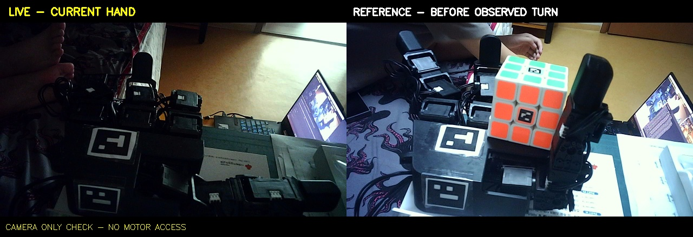

모델에서 5mm의 배치 차이로 회전과 접촉이 크게 달라졌다. 이번 실행은 이전에 실제로 돌았던 배치와 현재 배치를 비교할 사진을 확보한다. 잡기와 회전은 실행하지 않는다.
준비 자세가 자동으로 만들어진 뒤 비교한다. 손가락을 미리 사진처럼 맞출 필요는 없다.
모델에서 5mm의 배치 차이로 회전과 접촉이 크게 달라졌다. 이번 실행은 이전에 실제로 돌았던 배치와 현재 배치를 비교할 사진을 확보한다. 잡기와 회전은 실행하지 않는다.
준비 자세가 자동으로 만들어진 뒤 비교한다. 손가락을 미리 사진처럼 맞출 필요는 없다.
& "C:\Users\김준서\Documents\Codex\2026-09-23\files-mentioned-by-the-user-leap\outputs\leap_placement_alignment.cmd"
카메라 각도가 다르면 본체를 기준으로 큐브 위치를 비교한다. ID40이 가려져도 촬영할 수 있다. 화면의 좌우 사진은 비교용이며 3D 정렬 완료 표시가 아니다.

이 실행에서는 이후 주황 앞면이 흰 면으로 바뀌는 회전이 관찰됐다. 정확한 90도 성공 인증을 뜻하지 않는다.

위 점검 화면의 현재 손은 준비 전 OFF 자세다. 첫 SPACE 뒤 준비가 끝났을 때 예시와 비교한다.
검증: 현재 OFF 자세의 형상 201조건과 동역학 9조건, 소프트웨어 시험 17개 통과. 기존 전류와 PID 및 상태 중단 기준을 유지한다. 큐브 배치 이후의 위치 지령 쓰기는 차단한다.
끝나면 “했어”만 알려주면 된다. 사진과 관절값은 자동 저장되며 로그를 길게 붙여 넣을 필요가 없다.
앞선 네 실행과 회전·고정 모델 검토